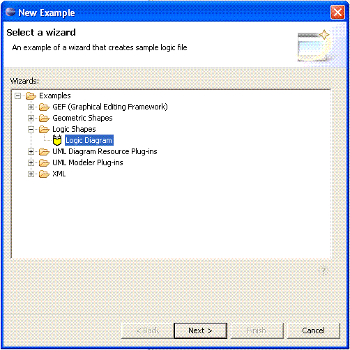

This plug-in is named org.eclipse.gmf.examples.runtime.diagram.logic. It allows creation of a simple circuit board editor persisted in a resource file with extension *.logic2. The editor demonstrates how a semantic model can be visualized using the diagram core components. In this case the semantic model is an EMF model that defines (hypothetically) how a circuit board could be represented in a meta-model. The notation meta-model, which is part of the diagram core is then mapped to this semantic meta-model and displayed in the editor so that the user can subsequently manipulate the semantic model.
n/a
This plug-in contributes a wizard to the "New Example" menu.

Selecting the "Logic Diagram" entry will create a new editor for editing logic models.
Please refer to the following tutorials for reviewing the code samples within this example:
Creating a shape
Creating a connection
Supporting
Diagram Preferences
Configuring and Extending the Diagram Palette
Supporting containment of shapes
Modifying a
container to support automatic layout
Refer to this example if you need: